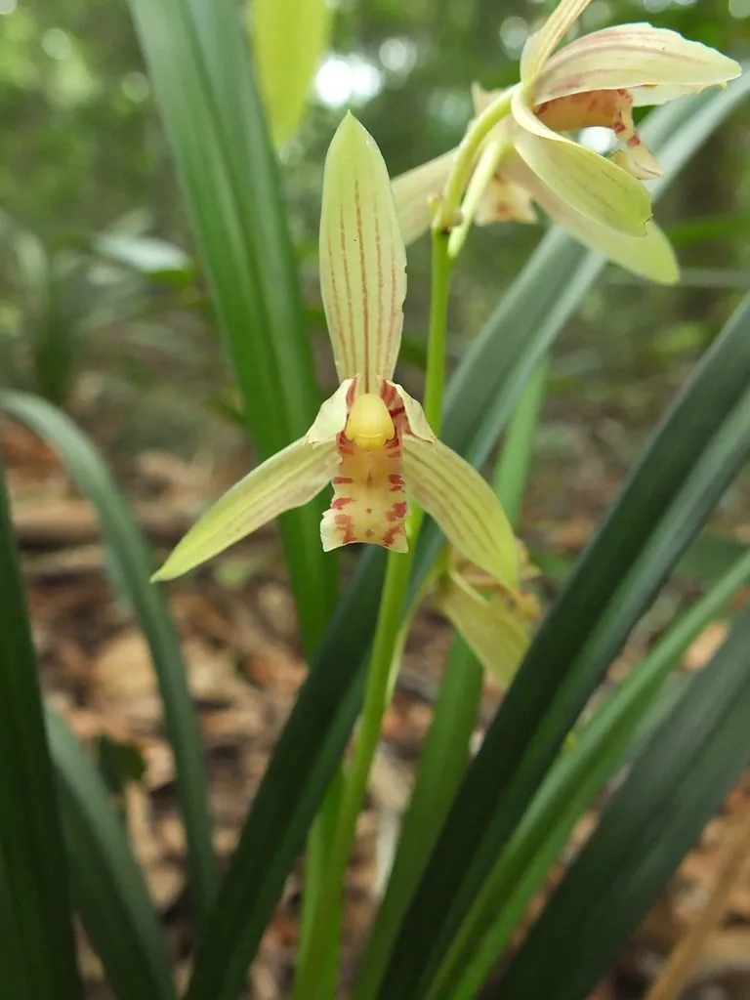

花卉与草本 · 植物界
建兰 Cymbidium ensifolium

兰科兰属多年生地生草本，叶片飘逸、花香清远，夏秋开花，是中国传统国兰“四大家”之一，原产中国南方。
- 分类
- 门被子植物门纲木兰纲目天门冬目科兰科属兰属
- 栖息环境
- 疏林下、溪谷旁的腐殖质坡地，喜半阴、湿润、通风
- 地理分布
- 原产中国南方、日本与东南亚，中国华南、西南山地有分布
- 保护级别
- 暂无评估；兰属野生种列入中国国家二级重点保护野生植物
物种志
建兰为兰科兰属多年生地生草本，假鳞茎卵球形，叶片 2–6 枚丛生，带状，长 30–60 厘米，绿色有光泽。花葶直立，着花 3–9 朵，花黄绿色至浅黄褐色，唇瓣有紫红色斑纹，香气清远，花期 6–10 月，有的植株一年可开两次；果实为蒴果。
建兰原产中国南方、日本和东南亚，常生于疏林下、溪谷旁的腐殖质坡地，喜半阴、湿润和通风良好的环境。它是中国传统国兰的重要种类，与春兰、蕙兰、墨兰并称“四大家”，叶片飘逸、花香清远，南宋以来深受文人喜爱。野生兰属植物已列入国家重点保护野生植物名录，市售建兰多为人工繁殖；栽培以疏松透气的植料为主，忌积水和强光暴晒。
形态与习性
- 株高叶长 30–60 厘米，花葶高 20–40 厘米
- 花期6–10 月，部分植株一年两开
- 果期花后结蒴果
- 光照喜半阴散射光
- 水分喜湿润，忌积水
- 土壤疏松透气、富含腐殖质的植料
- 繁殖以分株为主
- 主要用途国兰观赏、盆栽
趣味知识
- 建兰是中国传统国兰“四大家”之一，夏秋开花、香气清远。
- 部分建兰植株一年能开两次花，因此有“四季兰”之称。
- 野生兰属植物受国家保护，市售多为人工繁殖个体。
- 建兰叶片飘逸有光泽，是文人案头清供的常见兰花。